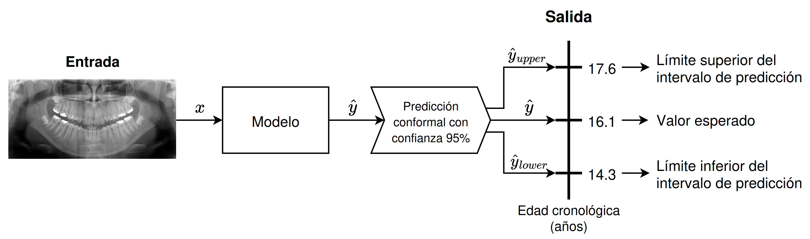

Welcome to my portfolio!
On this site I will keep a list of the …
Now, looking for a job 😉.
Bio
I am David González Durán. I have recently graduated in Computer Science and Business Management from the University of Granada.
During my double degree, I discovered my passion for AI, particularly Machine Learning. I realized that AI algorithms go far beyond what we code, acting as a bridge between complex information and strategic decision-making.
This passion naturally led me to Data Science. I love diving into datasets to uncover hidden insights and create visualizations that help us understand the reality behind the data.
Apart from that, and thanks to a well-structured subject, I developed a strong interest in Computer Vision. This field allowed me to explore everything from classical image representation and filtering to handcrafted feature extraction. Eventually, I moved into deep learning architectures, focusing primarily on image classification while also exploring the power of transformers for image segmentation.
However, lately, I also found out that AI makes mistakes and inherits biases from data, too. As a result, I have become increasingly committed to the field of Trustworthy AI. I believe that for artificial intelligence to be truly useful in the real world, it must be transparent and robust.
My latest focus has been Uncertainty Quantification, a topic explored in my Final Degree Project: Quantification of the uncertainty in machine learning model predictions for biologocal profile estimation problems (see more details below in Projects). This work integrates conformal prediction into biological estimation task, such as age and sex estimation, delivering statitiscally guaranteed prediction intervals (at regression) and label sets (at classification), capturing uncertainty across cases.

At the moment, I’m reading Interpretable Machine Learning by Cristoph Molnar.
Academic background
- Joint Honours Degree in Computer Science and Business Management, from 2019 to 2026.
Average score of 8.01 in Computer Science and 8.36 in Business Management.
Work experience
- Extracurricular internship as Data Engineer in Cívica Software from July to October 2024 (3 months).
Projects
- Quantification of the uncertainty in machine learning model predictions for biologocal profile estimation problems (link to repository) made in collaboration with Panacea Cooperative Research, supervised by Pablo Mesejo Santiago, and mentored by Javier Venema Rodríguez.
Skills and tools
Python: I have extensive experience with this programming language across a wide range of tasks, particularly in end-to-end data pipelines and machine learning research. My toolkit includes:
- Data Manipulation: Numpy, Pandas, Polars.
- Data Visualization: Matplotlib, Seaborn, Plotly, making all types of graphs. (Right now studying R to make better graphs)
- Notebooks: Jupyter and Marimo.
- Machine Learning Frameworks: Solid command of the ML lifecycle using Scikit-Learn for classical modeling, and PyTorch or TensorFlow for deep learning research. Familiarity with ONNX for model interoperability across platforms.
C++: Intermediate level.
Java: Intermediate level.
🤖 Machine Learning & Data Research:
Database Engineering and Analytics: I hold an intermediate level in SQL (Common Table Expressions, OVER, WHEN, UPDATE, procedures…).
I have practical experience working with enterprise-level data environments, focusing on the monitoring and maintenance of existing data structures:- Data Warehousing: Experienced with Snowflake and Teradata, supervising analytical datasets and executing minor schema modifications.
- ETL & Integration: Experience with Informatica PowerCenter.
Technical Communication & Tools: Clarity, order and relevance in documents are fundamental pillars of communication.
- Scientific Typesetting: Advanced use of LaTeX and typst for high-quality scientific documents and reports.
- Reproducible Publishing: Building data-driven platforms using Quarto (like this website page 😄).
- Collaborative Environments: Proficient in Overleaf and Google Workspace for real-time team collaboration.
Interests
DataViz: Focused on advanced exploratory data analysis (EDA) and the design of visualisations that help us understand data.
Trustworthy AI: Interested in uncertainty quantification and explainable AI to build trustworthy systems and ensuring robustness in environments where reliability and risk quantification are paramount.
Open Source: Convinced that open source is essential to democratize access to AI and accelerate technological progress, in addition to reducing dependence on propietary software.
References
Referenced by:
- Pablo Mesejo Santiago, Associate Professor at the Department of Computer Science and Artificial Intelligence of the University of Granada and co-founding partner and Chief AI Officer at Panacea Cooperative Research.